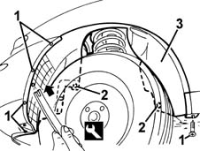

7055B42 Additional FRONT WHEEL ARCH (one), left or right - R.R.
- Path
- Procedures > 70 FITTINGS > 7055 MOULDINGS ON PROTECTIONS > 7055B EXTERIOR PROTECTIONS > 7055B42 Additional FRONT WHEEL ARCH (one), left or right - R.R.
- Kind
- repair procedure (removal / refitting; the operation number is the code)
- Applies to
- all engines; all production periods
- Interactive page
- https://sloeber94.github.io/elrnDB-fMltpl/en/#/2892268
Applies to: all engines; all production periods
 Removing
Removing
 Refitting
RefittingLift the front of the car.
1. Undo the wheelarch bolts.
2. Using the special tool, remove the retaining buttons.
 | Name | Country |
|---|---|---|
2 | Scraper blade | 1.878.077.000 |
3. Prise off and remove the additional wheelarch.

Applies to: all engines; all production periods
Refitting
RemovingCheck that the wheelarch is undamaged.
Fit the additional wheelarch.
Fit the retaining buttons.
Tighten the screws.
Lower the vehicle.
Topics that link to this page (43)
- 1004B12 power unit with manual gearbox - r+r for versions with a/c
- 1016B20 lh cylinder head extension - replace gasket
- 1016B24 rh cylinder head extension - replace gasket
- 1016C11 single cylinder head-r r gasket for versions with air conditioner
- 1020D12 front crank shaft oil seal cover - r + r and replace seals
- 1020D38 flywheel side oil seal - replace
- 1028H11 piston connecting rod set - r r
- 1032B10 toothed timing belt - r + r for timing adjustment or replacement
- 1032B46 toothed drive pulley - r + r
- 1032B52 toothed driven pulley (one) - r + r
- 1032C18 mobile timing system tensioner - r + r for 24 valve engines
- 1032C32 fixed timing system tensioner (one) r + r
- 1036B10 overhead camshaft - r r on vehicle
- 1036G10 camshaft controlling exhaust valves in top head - r + r with top head removed - includes replacement of top head
- 1036G20 camshaft controlling intake valves in top head - r + r with top head removed - includes replacement of top head if necessary
- 1048B48 heat exchanger duct - r r
- 1048B50 turbo charger intercooler - r + r
- 1060E10 pressure pump - r r
- 1060E40 supplementary pressure pump - r r
- 1060G22 cam angle sensor - r r
- 1072B10 inlet manifold - r + r and replace seal
- 1088C12 water pump - r+r for versions with air conditioner
- 1092A12 crankshaft pulley - r+r for versions with air conditioner
- 1092G10 single engine belt r r
- 1092G14 engine component single belt mobile tensioner - r + r
- 1092G20 engine component single belt fixed tensioner - one - r + r
- 1810A20 clutch - r + r
- 2110A10 manual gearbox and differential - r + r
- 2110D63 rh differential shaft oil seal - r r
- 2710A10 drive shaft with joints (one), l/h or r/h - r + r
- 2710A31 intermediate drive shaft - r r
- 2710A35 intermediate drive shaft mount - r r
- 4130B24 power steering pump r r for versions with air conditioner
- 4130B32 power steering pump mount - r r
- 4130B34 supply pipe from fluid resevior to power steering pump r r
- 4130B35 supply pipe from fluid resevior to power steering pump r r for right hand drive versions
- 5040A20 air conditioner compressor - r+r - includes fluid level check and top up if necessary
- 5050A10 WINDSCREEN WASHER FLUID RESERVOIR (IN ENGINE BAY) - R+R
- 5050B22 FRONT AND REAR SCREEN WASHER PUMP - R+R
- 5050D20 HEADLAMP WASHER PUMP - R+R
- 5530A14 alternator - r+r for versions with air conditioner
- 7025A10 BONNET LID - SQUARE
- 7025A18 L/H OR R/H BONNET LID HINGE (ONE) - R+R WITH LID REMOVED